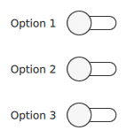

SwitchDelegate QML Type
Item delegate with a switch indicator that can be toggled on or off. More...
| Import Statement: | import QtQuick.Controls 2.5 |
| Since: | Qt 5.7 |
| Inherits: |
Properties
- position : real
- visualPosition : real
Detailed Description

SwitchDelegate presents an item delegate that can be toggled on (checked) or off (unchecked). Switch delegates are typically used to select one or more options from a set of options. For smaller sets of options, or for options that need to be uniquely identifiable, consider using Switch instead.
SwitchDelegate inherits its API from ItemDelegate, which is inherited from AbstractButton. For instance, you can set text, and react to clicks using the AbstractButton API. The state of the switch delegate can be set with the checked property.
ListView {
model: ["Option 1", "Option 2", "Option 3"]
delegate: SwitchDelegate {
text: modelData
}
}
See also Customizing SwitchDelegate and Delegate Controls.
Property Documentation
[read-only] position : real |
This property holds the logical position of the thumb indicator.
The position is expressed as a fraction of the indicator's size, in the range 0.0 - 1.0. The position can be used for example to determine whether the thumb has been dragged past the halfway point. For visualizing a thumb indicator, the right-to-left aware visualPosition should be used instead.
See also visualPosition.
[read-only] visualPosition : real |
This property holds the visual position of the thumb indicator.
The position is expressed as a fraction of the indicator's size, in the range 0.0 - 1.0. When the control is mirrored, the value is equal to 1.0 - position. This makes the value suitable for visualizing the thumb indicator taking right-to-left support into account. In order to for example determine whether the thumb has been dragged past the halfway point, the logical position should be used instead.
See also position.